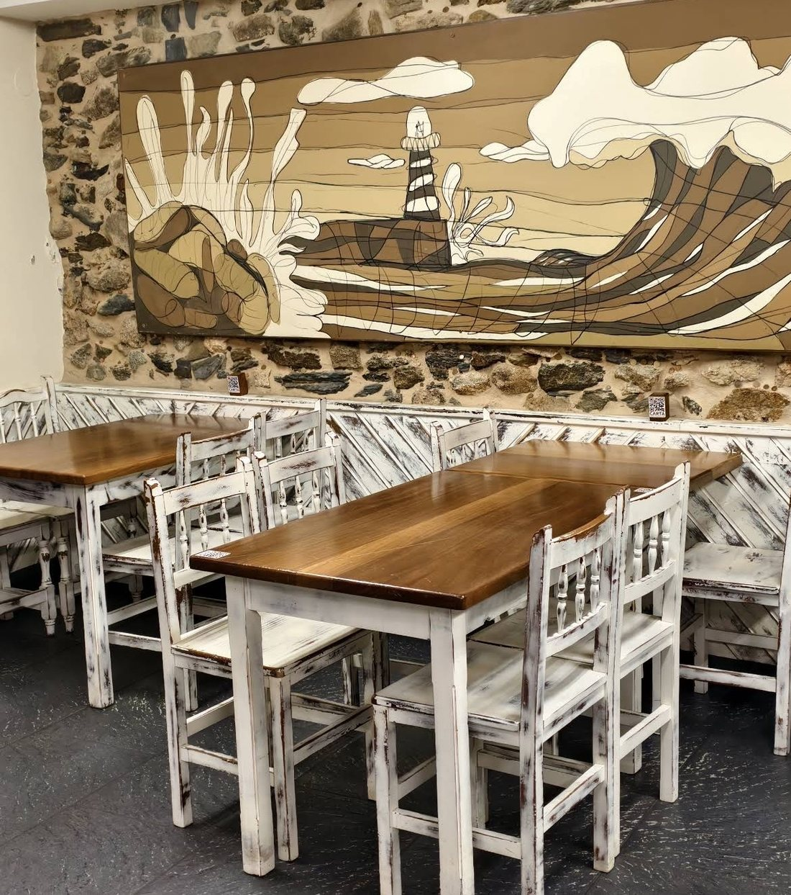
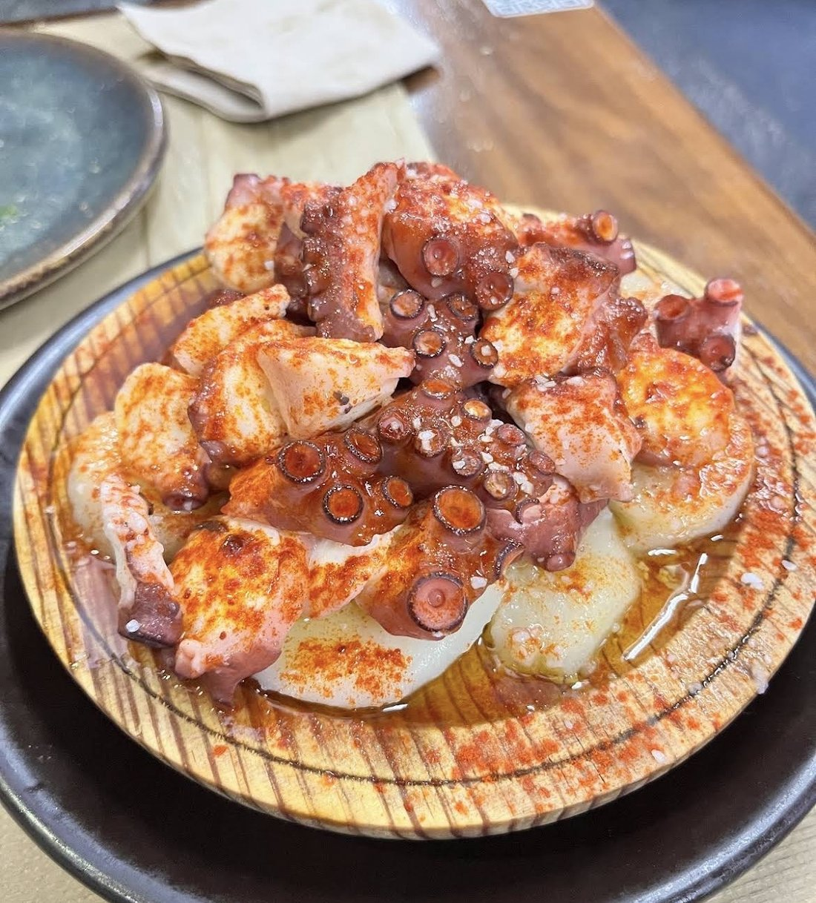
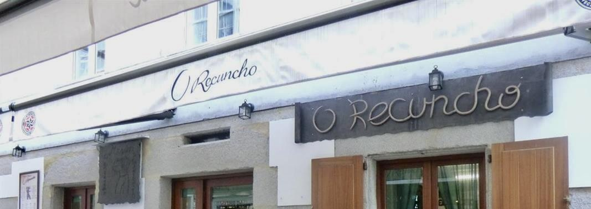
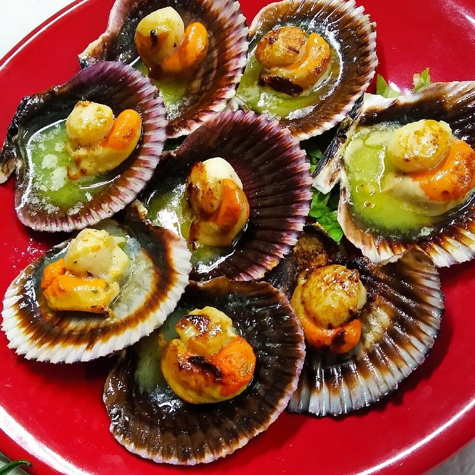
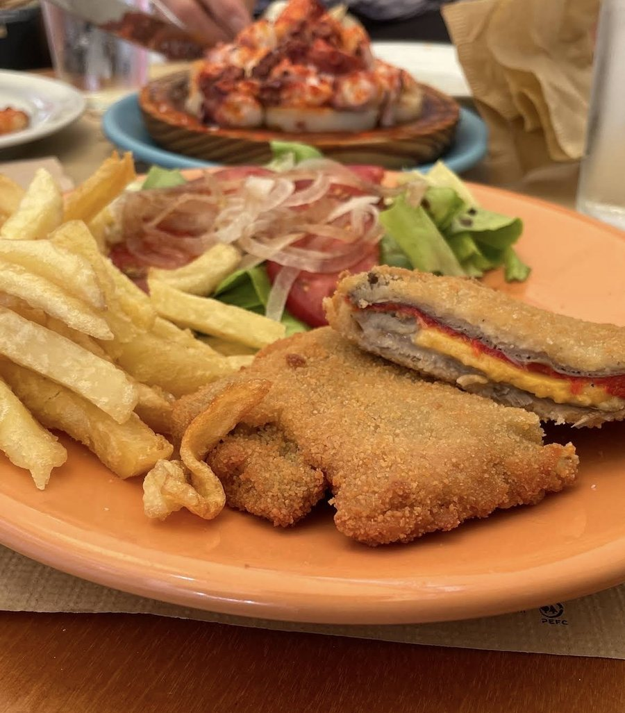

La casa
El polbo
Sobre patata cocida, con aceite, sal gruesa y pimentón, en plato de madera.
- Polbo á feiraPulpo al estilo feria 21,50 €
- Polbo á galegaPulpo a la gallega 18,00 €
- Ovos rotos con polboHuevos rotos con pulpo 20,00 €
El local2002
O Recuncho abrió en 2002 en la Rúa Pastor Díaz y no se ha movido de ahí. Siete mesas, piedra vista y un faro pintado en la pared del fondo.
Se come marisco: pulpo, vieiras, luriñas, navajas, percebes. Y lo que sale de la brasa y de la cazuela — churrascos, arroces, croquetas caseras.

Carta
Lo que hay hoy
Racións
RacionesEl polbo, en la especialidad de la casa.
- Ameixas á pranchaAlmejas a la plancha
- Berberechos á pranchaBerberechos a la plancha
- Navallas á pranchaNavajas a la plancha
- Percebes
- Ensalada normal
- Pan de forno de leñaPan de horno de leña1,10 €
- Paté de merluza6,50 €
- Pementos de PadrónPimientos de Padrón7,00 €
- Espetada moura con patacasPincho moruno con patatas9,50 €
- Croquetas caseirasCroquetas caseras9,50 €
- Lacón asado11,50 €
- Luriñas fritasChipirones fritos12,00 €
- RaxoCinta de lomo de cerdo12,50 €
- Luriñas á pranchaChipirones a la plancha13,00 €
- Vieiras do PacíficoVieiras del Pacífico14,00 €
- Luras fritasCalamares fritos15,50 €
- Ensalada de bonito do norte ao naturalEnsalada de bonito del norte al natural17,50 €


Entrantes
- Ensalada mixta10,00 €
- Tomate rosa aliñado10,00 €
- Tomate Mar Azul con burrata12,00 €
- Tomate con puerro confitado12,00 €
- Ensaladilla rusa12,00 €
- Alcachofas confitadas12,00 €
- Croquetas de jamón ibérico12,00 €
- Croquetas de chipirones14,00 €
- Torrezno de Soria14,00 €
- Morcilla Magnum15,00 €
- Tosta de pulpo con queso San Simón15,00 €
- Anchoas Cantábrico25,00 €
- Cecina wagyu25,00 €
Arroces
- Arroz con secreto ibérico20,00 €
- Arroz con mejillón y langostino22,00 €
- Arroz con pulpo y zamburiñas23,00 €
- Arroz de senyoret23,00 €
- Arroz caldoso con bogavante26,00 €
Carnes
- Chorizo rojo o criollo3,00 €
- Patatas fritas3,50 €
- Churrasco de cerdo18,00 €
- Churrasco de ternera18,00 €
- Entrecot25,00 €
- Lágrima ibérica25,00 €
- Tabla de carnes variadasEnsalada, criollo, chorizo y patatas55,00 €
Pescados y mariscos
- Almejas a la plancha
- Navajas a la plancha
- Pez espada a la brasa20,00 €
- Bacalao a la brasa25,00 €
Sobremesa
Postres- Flan de ovoFlan de huevo4,00 €+0,50 € con nata
- RequeixoRequesón4,50 €+0,50 € con miel
- Torta de queixoTarta de queso4,50 €
- Flan café4,50 €+0,50 € con nata
- Arroz con leiteArroz con leche5,00 €
- Tarta de tres chocolates5,00 €
- Torta de nozTarta de nuez5,50 €
- Torta da avoaTarta de la abuela5,50 €
- Queixo San Simón da CostaQueso San Simón da Costa8,50 €+2,50 € con membrillo
Si tienes alguna alergia o intolerancia, dilo al pedir.
Opiniones
“El pulpo a la gallega y a la plancha, insuperables, así como las patatas, buenísimas”Tripadvisor
-
“Las raciones son grandes, el pulpo buenísimo, las navajas muy ricas y frescas.”
Tripadvisor -
“Las zamburiñas y el pulpo exquisitos. Buen trato del personal.”
Tripadvisor
4,5 sobre 5 en Google, con más de 3.600 valoraciones.
Cómo llegar
Rúa Pastor Díaz, 55
- Dirección
- Rúa Pastor Díaz, 55 baixo
27850 Viveiro (Lugo) - Teléfono
- 982 563 191
- Horario · todos los días
- 13:00 – 17:00 / 20:00 – 00:00